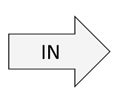
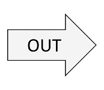

Basic Principles of Chromatography Explained by the Plate Theory
This application has been developed for teaching purposes and addresses undergraduate students with
courses in introduction to chromatography.
You will be able to observe the behavior of various analytes in a chromatographic column depending on the number of column plates and the affinity of the studied compounds for the stationary and the mobile phases (partition coefficient).
The calculations used in this application are based on the plate theory of chromatography, developped by the inventors of liquid/liquid chromatography Martin and Synge*.
* Martin AJP, Synge RLM. A new form of chromatogram employing two liquid phases. Biochem J. 1941 ; 35(12) : 1358–68.
You will be able to observe the behavior of various analytes in a chromatographic column depending on the number of column plates and the affinity of the studied compounds for the stationary and the mobile phases (partition coefficient).
The calculations used in this application are based on the plate theory of chromatography, developped by the inventors of liquid/liquid chromatography Martin and Synge*.
* Martin AJP, Synge RLM. A new form of chromatogram employing two liquid phases. Biochem J. 1941 ; 35(12) : 1358–68.
Start by entering the number of
compounds to inject on the column, and the number of column plates (these two numbers were limited to 4
and 2000, in order to avoid excessive calculation time):
Number of compounds (1 to 4):
Number of column plates (10 to 2000):
Note: In this application, the column is supposed to have the same plate number
with
respect to all analysed compounds. In reality, this is not always true.
Then, enter the partition coefficient (K) for each compound:
Partition coeff. = (Concentration in stationary phase / Concentration in mobile phase)
...in each column plate.
| Compound 1 : |
Step-by-step equilibration table:
The table below shows the concentration of the
compound(s) in the stationary and mobile phases of the column.
At the beginning, the compound(s) are injected
with the mobile phase, therfore all of the concentration (100%) is found in the mobile phase
of the 1st plate.
You can start by equilibrating the column, plate
by plate, by hitting the button "Equilibrate".
After an equilibration step, you will be able to
push the mobile phase. In this step the mobile phase is moved to the next plate, carrying
through its corresponding concentration. Once the mobile phase have been pushed, you can
proceed to another equilibration as previously.
Calculating!
Click here to obtain more
details about the table above.
Continuous elution and chromatogram simulation:
Here you can view an animation of your compounds
moving
along the column.
You can also observe a depiction of what a detector
(like
a UV-spectrometer) sees at the output of the column. This is what we call a "Chromatogram"
(click
here to see more details about the approximations used in this app).
Before starting the simulation, some information
about
the column and the operating conditions are needed:
Column dead volume (mL):
(What is
it?)
Mobile phase flow rate
(mL/min):


To
go
further:
According to the plate theory, the
chromatogram allows us to calculate some interesting properties about the column and the
compounds.
Click to see how to calculate the number of plates of the column, or the partition coefficient of the compounds.
Click to see how to calculate the number of plates of the column, or the partition coefficient of the compounds.


About:
This web application was written by
Wael
Zeinyeh (Faculty of Pharmacy, Université de Lyon).
It was evaluated and commented by Anne Denuzière, Lars Petter Jordheim and Christelle Machon.
This application is intended for educational use in an academic environment only.
It was evaluated and commented by Anne Denuzière, Lars Petter Jordheim and Christelle Machon.
This application is intended for educational use in an academic environment only.